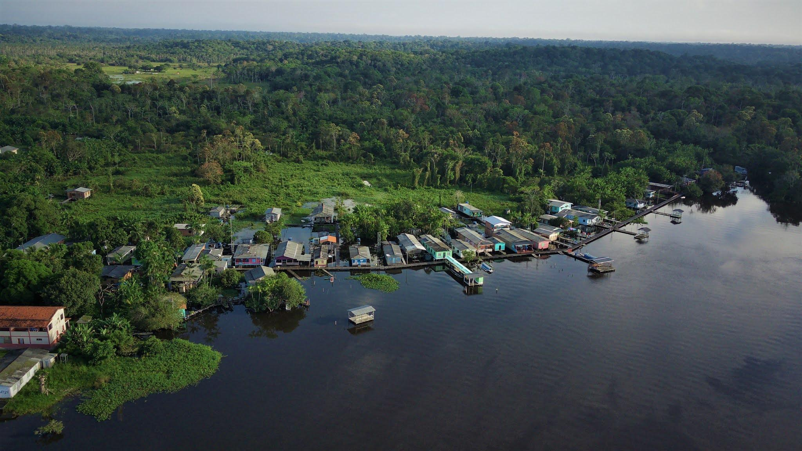
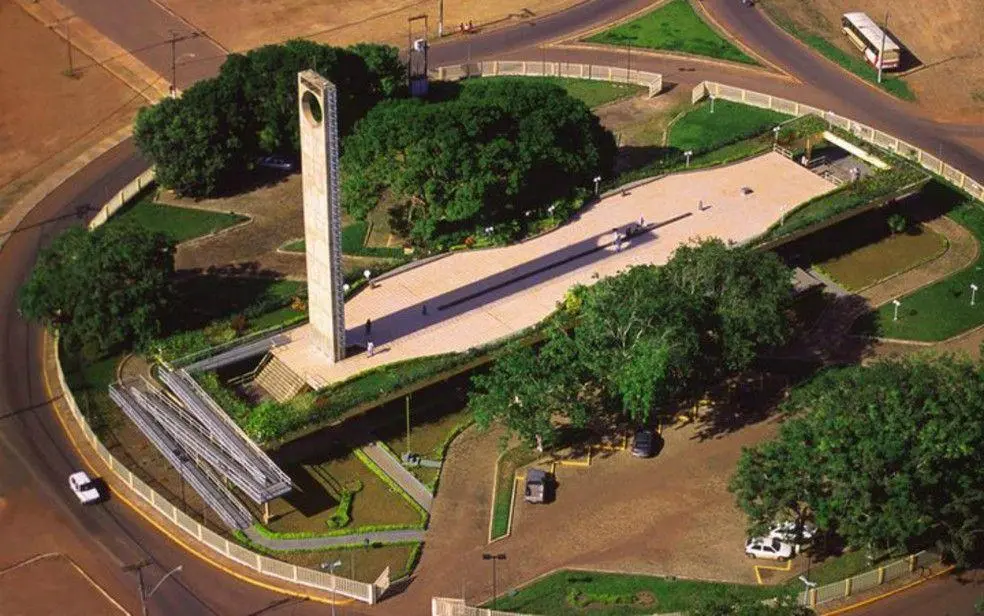
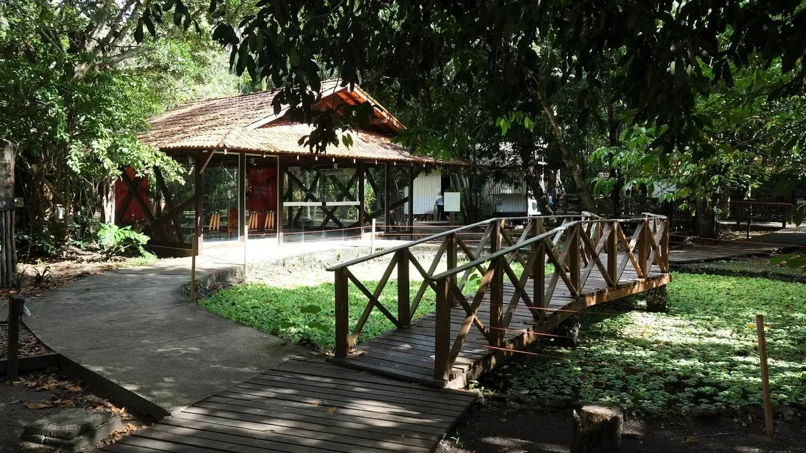
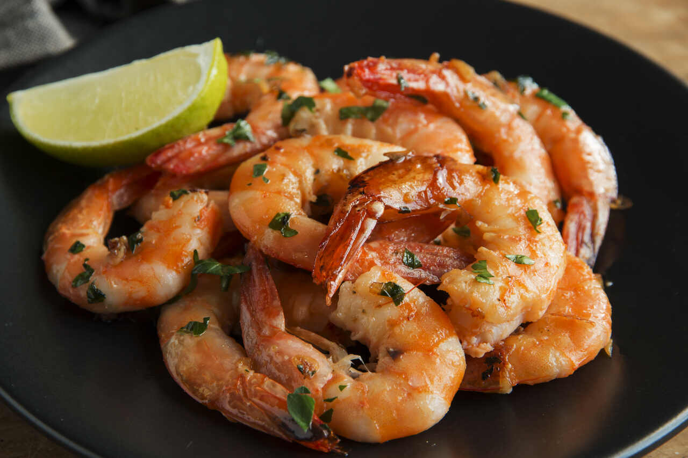
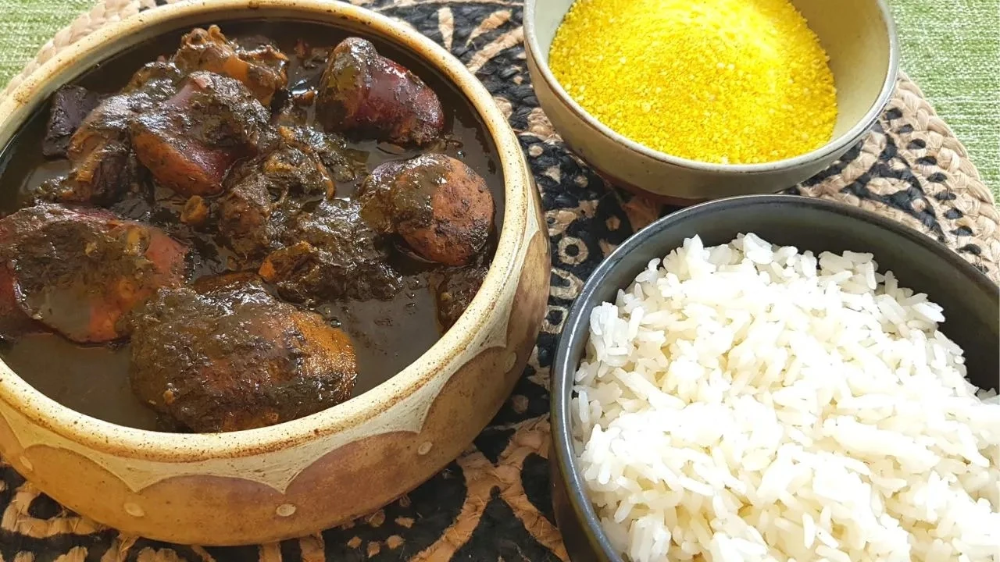
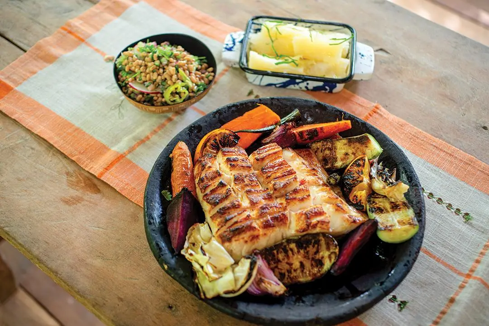

Capital
Macapá
Conheça destinos, culturas, sabores e paisagens de todas as regiões
brasileiras.
Destinos, culturas e paisagens
incríveis te esperam.
O Amapá é um estado localizado no extremo norte do Brasil, fazendo fronteira com a Guiana Francesa. Grande parte de seu território é coberta pela Floresta Amazônica, o que faz do estado um dos mais preservados do país. O Amapá destaca-se por sua rica biodiversidade, pela forte presença de áreas de conservação ambiental e pelo famoso marco da Linha do Equador, que atrai visitantes de diversas regiões do Brasil e do mundo.

Macapá
Aproximadamente 142.828 km²
Cerca de 733 mil habitantes
Norte

A Fortaleza de São José de Macapá é um dos principais patrimônios históricos da Região Norte. Construída no século XVIII, foi fundamental para a defesa do território brasileiro durante o período colonial.

O Marco Zero do Equador permite que os visitantes fiquem simultaneamente nos hemisférios Norte e Sul. É um dos cartões-postais mais famosos do estado.

O Museu Sacaca é um dos principais espaços culturais do estado. O museu apresenta aspectos da vida amazônica, incluindo habitações tradicionais, conhecimentos indígenas, plantas medicinais, atividades extrativistas e costumes das populações ribeirinhas. É uma excelente opção para quem deseja conhecer a cultura e a história da região amazônica.

Prato muito popular no estado, preparado com camarões cozidos no vapor e servidos com molhos e acompanhamentos regionais.

Receita tradicional amazônica preparada com folhas de mandioca trituradas e cozidas por vários dias, acompanhadas de carnes variadas.

Prato feito com filhote, um peixe amazônico de carne macia e sabor suave, geralmente assado na brasa e servido com acompanhamentos regionais.
O Amapá possui clima equatorial, com temperaturas elevadas e alta umidade durante todo o ano. Roupas leves, protetor solar e repelente são indispensáveis.
O Amapá possui clima equatorial, com temperaturas elevadas e alta umidade durante todo o ano. Roupas leves, protetor solar e repelente são indispensáveis.
A capital Macapá concentra as principais atrações históricas e culturais, enquanto as áreas de conservação e os parques nacionais são ideais para quem deseja explorar a natureza amazônica.
A capital Macapá concentra as principais atrações históricas e culturais, enquanto as áreas de conservação e os parques nacionais são ideais para quem deseja explorar a natureza amazônica.
A culinária amapaense destaca-se pelos peixes de água doce, camarões e ingredientes típicos da Amazônia. Experimentar pratos regionais é uma excelente forma de conhecer a cultura local.
A culinária amapaense destaca-se pelos peixes de água doce, camarões e ingredientes típicos da Amazônia. Experimentar pratos regionais é uma excelente forma de conhecer a cultura local.